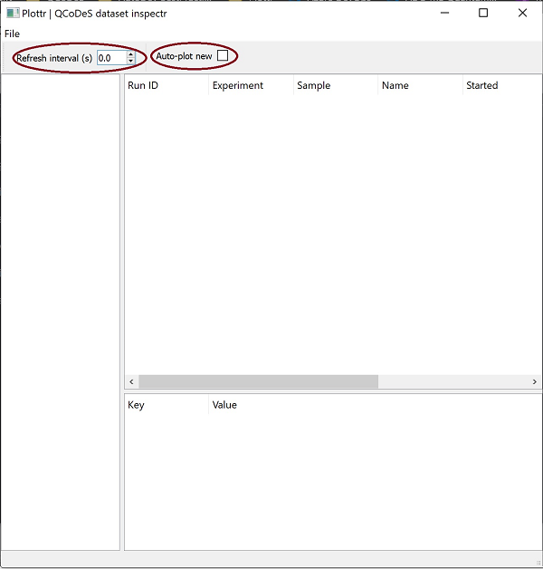

This page was generated from
docs/examples/plotting/How-to-use-Plottr-with-QCoDeS-for-live-plotting.ipynb.
Interactive online version:
 .
.
How to use Plottr with QCoDeS for live plotting?
Note: This notebook assumes that the user has a conda environment on their system with latest versions of plottr installed. It is not necessary to have plottr installed in measurements environment itself. Plottr can be in a separate environment as well. If you do not have plottr installed, please follow Plottr Quickstart (Installation) instructions.
Let’s begin!
First, make necessary imports.
[ ]:
import os
import numpy as np
import qcodes as qc
from qcodes.dataset import (
Measurement,
do1d,
initialise_or_create_database_at,
load_or_create_experiment,
)
from qcodes.instrument_drivers.mock_instruments import (
DummyInstrument,
DummyInstrumentWithMeasurement,
)
qc.logger.start_all_logging()
Mock Set-up
For this notebook, we create a mock station setup.
[2]:
dac = DummyInstrument('dac', gates=['ch1', 'ch2'])
dmm = DummyInstrumentWithMeasurement(name='dmm', setter_instr=dac)
station = qc.Station(dmm, dac)
Initialize/Create Database
Database needs to be initialized or created if it doesn’t exist already, using initialize_or_create_database method. Furthermore, datasets are associated with experiments and by default the run is appended to the latest existing experiment. We can load or create an experiment using load_or_create_experiment function.
[3]:
db_file_path = os.path.join(os.getcwd(), 'plottr_for_live_plotting_tutorial.db')
initialise_or_create_database_at(db_file_path)
exp = load_or_create_experiment(experiment_name='plottr_for_live_plotting_with_subsecond_refresh_rate',
sample_name="no sample")
Launch Plottr Inspectr
Open an anaconda prompt and activate your conda environment where plottr is installed. Start Inspectr GUI with plottr-inspectr command (more details for launching Inspectr are here. You will see a window as show below. In this window, set Refresh interval (s) to the desired value and check Auto-plot new. Using File button, load the database initialized/created above
(Alternatively, database can be dragged and dropped on the Inspectr window).

On selection, refresh interval and auto-plot new checkbox will look like as follows.

If plottr is installed in same environment as measurements environment
Plottr-inspectr can also be launched with required DB as follows.
[4]:
import IPython.lib.backgroundjobs as bg
from plottr.apps import inspectr
jobs = bg.BackgroundJobManager()
jobs.new(inspectr.main, db_file_path)
[4]:
<BackgroundJob #0: <function main at 0x0000016A042E9C18>>
Set refresh interval and auto-plot new as mentioned above.
Measurement
Measurements can be run in two ways.
Measurement with run context manager
Notice write_period = 0.1 . This sets the measurement write period to 0.1s and is recommended to be used with sub-second refresh interval for plottr.
[5]:
meas = Measurement(exp=exp)
meas.register_parameter(dac.ch1)
meas.register_parameter(dmm.v1, setpoints=(dac.ch1,))
meas.write_period = 0.1
with meas.run() as datasaver:
for set_v in np.linspace(0, 25, 100):
dac.ch1.set(set_v)
get_v = dmm.v1.get()
datasaver.add_result((dac.ch1, set_v),
(dmm.v1, get_v))
dataset = datasaver.dataset
Starting experimental run with id: 3.
Measurement with doNd
[ ]:
do1d(dac.ch1, 0, 25, 100, 0.01, dmm.v1, dmm.v2, write_period=0.1, do_plot=False)
On starting these measurements, a plottr plot window (as shown below) will open automatically. This plot will keep refreshing at the interval rate set by you till the measurement runs.
Live Plot

For more details about Plottr, head to Plottr Documentation
[ ]: